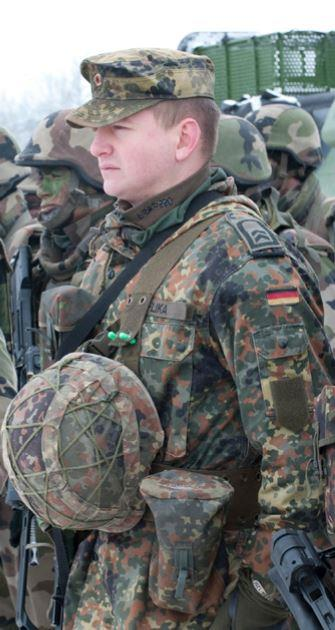
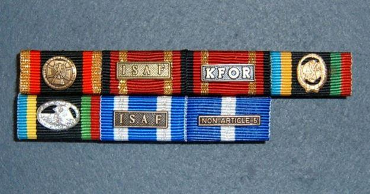
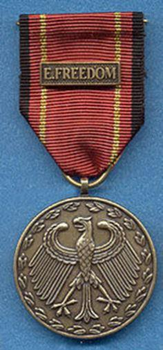

1990 est l’année où la République fédérale d’Allemagne est sur le point de tourner la dernière page de la Guerre froide et d’accomplir, en novembre de cette année-là, l’unification tant attendue avec ses frères de l’Est.
Paradoxalement, alors que tout laisse espérer que le monde vivra une période d’harmonie et de paix les États-Unis sont à la veille de mettre sur pied l'opération « Bouclier du désert » qui deviendra la plus grande coalition militaire jamais engagée depuis la seconde guerre mondiale. Déclenchée le 6 août 1990 après l'invasion du Koweït par l'Irak, elle a dans un premier temps pour but de protéger l'Arabie saoudite d'une éventuelle attaque irakienne¹.
L'éventualité d'une intervention se faisant plus précise, l’allié américain exige du gouvernement ouest allemand de s’engager désormais activement dans cette opération militaire.
Malgré la pression « amicale » des américains, épaulés en cela par certains alliés de l’OTAN, le gouvernement chrétien démocrate d’Helmut Kohl refuse dans un premier temps, poliment, une quelconque participation militaire à l’opération « Desert Shield » .
En contrepartie, il offre la possibilité d’utiliser les bases aériennes, la logistique militaire de la Bundeswehr ainsi que des compensations en équipements militaires et financières. C’est ce que l’on appellera dès lors la « diplomatie du chéquier ». L’Allemagne avait toujours privilégié de payer plutôt que d’engager ses soldats en zones hostiles. Ce faisant, l’Allemagne deviendra l’un des plus gros contributeurs financiers et une des plateformes logistiques des plus importantes durant la guerre du Golfe.
Cependant, la pression politique des alliés sera telle que le gouvernement fédéral se verra néanmoins contraint de déployer des militaires à l’occasion de l’opération Tempête du désert en 1991. L’Allemagne enverra des batteries anti-aériennes en Turquie pour protéger les bases aériennes d’Erhac et de Diyarbakir. Elle dépêchera également des éléments de sa marine en Méditerranée, puis dans le golfe persique dans le cadre de la lutte contre les mines, afin de renforcer la protection du flanc sud de la Méditerranée.
Refusant tout déploiement de la Bundeswehr en zone de conflits et en dehors de la zone de traité de l'OTAN² cette décision engagera un débat politique virulent qui opposera alors au sein du Bundestag, et par médias interposés, les partisans du pouvoir aux sociaux-démocrates et aux verts, farouchement opposés à cette aide logistique.
Alors que la guerre du Golfe vient tout juste de se terminer, de multiples crises militaires et humanitaires secouent la planète qui amèneront la République fédérale à être sollicitée par ses partenaires américains et européens à engager³ militairement la Bundeswehr dans des opérations extérieures.
C’est ainsi qu’en juin 1991, la Slovénie et la Croatie déclarent leur indépendance de la Yougoslavie, suivie par la Macédoine et la République de Bosnie-Herzégovine. La désintégration de cet État balkanique multiethnique met en lumière des conflits de nationalité longtemps réprimés par Tito et ramène la guerre en Europe.
Après son départ de Slovénie et de Croatie, l'ex-armée yougoslave de Bosnie-Herzégovine se positionne pour aider les Serbes de Bosnie qui y vivent et c’est le début d’affrontements sanglants. En octobre 1992, l'ONU ordonne une zone d'exclusion aérienne au-dessus de la Bosnie-Herzégovine. La Bundeswehr apportera son soutien à l'opération « Deny Flight » et participera aux vols de surveillance avec ses AWACS.
En 1992, menacé par la sécheresse, la guerre civile et l'effondrement des structures étatiques, le gouvernement fédéral allemand décide la participation d’un contingent médical et logistique de soldats allemands à la mission de maintien de la paix des Nations-Unies au Cambodge. À ce titre un hôpital de campagne a été édifié à Phnom Penh. Malheureusement la Bundeswehr déplorera son premier mort en mission extérieure.
Sur le plan légal, les engagements militaires de la Bundeswehr ont toujours été très controversés et amèneront l’opposition parlementaire à déposer un recours auprès de la cour constitutionnelle fédérale. Mais, au grand dam des opposants, la cour siégeant à Karlsruhe rendra un verdict décisif en 1994.
Les juges constitutionnels étaient arrivés à la conclusion qu’étaient légitimes, et couverts par la Loi fondamentale, non seulement les déploiements armés de la Bundeswehr sous mandat de l'ONU ou dans le cadre de l'OTAN, mais également les opérations en dehors de la zone du Traité de l'OTAN. Cependant, l’accord du Bundestag est obligatoire⁴. Ce contrôle parlementaire sera formalisé par la loi de mars 2005 dite « de participation du parlement » (Parlamentsbeteiligungsgezetz) qui pose le principe de l’autorisation parlementaire de l’engagement des forces armées allemandes en dehors du territoire national.
DES MÉDAILLES POUR LA BUNDESWEHR … OUI, MAIS ÉTRANGÈRES
Jusqu’en 1996, les militaires allemands ne se verront reconnaître leur engagement opérationnel que par l’attribution de médailles de l’ONU ou de l’OTAN. Elles seront jusque-là les seules marques distinctives portées sur l’uniforme.
L’Allemagne est restée très frileuse en ce qui concerne la création de décorations militaires. En effet, afin de ne pas heurter les sensibilités pacifistes d’une grande majorité de la population allemande le gouvernement fédéral jugera trop sensible et polémique le fait de créer de nouvelles distinctions honorifiques, malgré des suppliques insistantes de la part d’officiers généraux qui livraient au ministère de la défense fédéral le sentiment d’injustice ressenti par la troupe.
Il faudra un long processus « politique » et de nombreuses interventions de parlementaires auprès du ministre de la Défense pour qu’enfin une nouvelle distinction, propre aux missions extérieures, voie le jour.
RECONNAISSANCE TARDIVE
De ce fait, Les soldats de la Bundeswehr attendront 16 ans⁵ pour qu’enfin l’Allemagne reconnaisse leur engagement dans des opérations humanitaires, de maintien de la paix et de consolidation de la paix par l’attribution d’une décoration honorifique : la médaille de déploiement des forces armées allemandes.
Le 26 juin 1996 Volker Rühe, ministre fédéral de la Défense d’alors, remettra exceptionnellement et en personne, les premières médailles à 26 Soldats et collaborateurs civils de la Défense pour leur participation à l’opération en Bosnie-Herzégovine.

Deux rubans de médailles de déploiement pour les missions ISAF (Afghanistan) et KFOR (Kosovo)
À la suite des événements du 11 septembre 2001, la Bundeswehr sera de plus en plus amenée à s’engager dans des missions de guerre et tout particulièrement en Afghanistan où les soldats allemands, au même titre que leurs camarades, auront à déplorer morts et blessés graves⁶.
PROTOCOLE ET TRADITIONS
La remise de la médaille de déploiement des forces armées allemandes sur le théâtre des opérations se fait lors d’une cérémonie militaire, juste avant le retour en Allemagne. À cette occasion, les récipiendaires reçoivent de la part du supérieur hiérarchique, ou du commandant du détachement, la médaille et le certificat en main propre.
Le président fédéral a approuvé en 2003 un amendement élargissant l’attribution de la médaille aux étrangers afin de pouvoir honorer des services exceptionnels rendus à la Bundeswehr par les membres des forces armées étrangères durant la même mission.
Contrairement à l’armée française, dont l’histoire repose sur des traditions militaires vieilles de plusieurs siècles, le ministère fédéral de la Défense prohibe depuis plusieurs années tout rappel aux traditions ancestrales militaires allemandes. Aucunes commémorations aux victoires passées (même celles qui n’ont aucun rapport avec la période douloureuse du nationale socialisme) encore moins celles de l’ex-NVA ne sont tolérées sous peine de sanctions.
En effet, pour les responsables politiques allemands la Bundeswehr, créée en 1955, doit puiser les sources de ses traditions dans sa jeune histoire militaire et donc dans les engagements opérationnels récents, et dans des actions héroïques menées par la nouvelle génération de soldats.
Malheureusement, et malgré sa jeunesse, force est de constater que la Bundeswehr avaient été créée par d’anciens cadres de la Wehrmacht, eux-mêmes garants de traditions de plusieurs siècles. Outre l’interdit détourné récemment encore, la montée du populisme et du parti nationaliste AFD ont amené le ministère de la défense à durcir drastiquement ses positions.
Toute manifestation « trop patriotique » où des soldats allemands auraient été identifiés (qu’elle se déroule au sein d’une caserne ou à l’extérieur de la caserne), et pouvant être interprété comme nationaliste (donc extrémiste), est sévèrement sanctionnée.
Par conséquent, le pistage de promoteur d’un quelconque courant « traditionaliste » au sein de la Bundeswehr est devenu la norme. Les salles d’honneur (s’il en existe) doivent être libres de tout rappel guerrier susceptible de rappeler ostensiblement des victoires d’antan quelles qu’elles soient ! D’ailleurs il n’existe pas de traditions dans les régiments allemands et il est donc aujourd’hui impossible à un jeune soldat de pouvoir se raccrocher à un quelconque « esprit de corps ».
Contrairement aux commémorations françaises, la majorité des manifestations militaires allemandes se font à l’abri des regards dans les casernes pour ne pas risquer de se trouver confronté à des mouvements anarchistes et pacifistes qui ne ratent aucune occasion pour perturber ces prises d’armes.
Angela Merkel à la rencontre des militaires allemands en Afghanistan le 10 mai 2013
N’ayant que peu de lien avec la population et considérée par des années de désinformation comme un mal nécessaire, la Bundeswehr a du mal à recruter et à se faire apprécier. Le manque de considération au sein de la société et des élites se traduit également lors des cérémonies d’hommages rendus aux soldats morts au combat.
Alors qu’en France l’engagement de l’armée en opération intérieure dans le cadre de l’Opération Sentinelle fait l’unanimité au sein de la population française, une proposition similaire faite en Allemagne a suscité une opposition particulièrement virulente afin de réfuter tout engagement militaire de la Bundeswehr sur le territoire allemand !
Tout ceci allant à l’encontre de notre conception de l’hommage que l’on doit rendre aux héros, qu’un pays comme l’Allemagne ne puisse honorer décemment ceux qui par leur sacrifice suprême ont donné leur vie pour protéger leur pays nous semble incompréhensible.
Alors qu’en France, le grand maître de l’ordre de la légion d’honneur attribue à titre posthume la croix de chevalier de la légion d’honneur ou/et la médaille militaire aux soldats morts en service commandé, l’Allemagne, elle, n’attribue pas son ordre du mérite fédéral à ceux qui se sont sacrifiés.
L’INSIGNE
Depuis 1955, les actions menées par les militaires de la Bundeswehr ne seront ainsi récompensées que par deux distinctions honorifiques ce qui démontre le peu d’intérêt et de considération porté à la « chose militaire » par leurs gouvernants et qui s’est traduit dans la réalisation et la fabrication des distinctions honorifiques.
En voulant faire des économies, les fonctionnaires du ministère de la défense ont fait preuve d’un manque cruel d’imagination. Tout d’abord, en ne créant qu’un modèle unique de médaille (pour l’Einsatsmedaille de la Bundeswehr) affublée d’un ruban identique permettant de décliner celle-ci en une seule version où seul le changement de couleur ou d’inscription d’agrafe permet de faire la différence du lieu d’engagement opérationnel du titulaire.
Nous remarquons également que le ministère fédéral de la Défense ne s’est pas vraiment soucié de faire de la phaléristique pour créer cette médaille. En effet, la médaille est la reproduction uniforme de l’avers des pièces de monnaie de l’ancienne monnaie le Deutsch mark alors qu’il suffisait d’avoir un peu de créativité en changeant tout bonnement et en fonction de l’échelon acquis le ruban et/ou la représentation de l’aigle fédéral.
Il est vraiment à espérer que la mentalité allemande envers ses soldats change et évolue vers un respect mérité, une considération, qui manquent cruellement depuis de très nombreuses années.
A.W.
Notes :
1. Le 6 septembre 1990, près de 100 000 militaires de la coalition sont installés dans les États de la péninsule Arabique. Le 8 novembre, ce sont 140 000 militaires, des centaines d'avions militaires de tous types et des dizaines de navires de guerre qui sont sur zone. L'éventualité d'une intervention se faisant plus précise, des renforts affluent jusqu'au premier jour de l'offensive alliée le 16 janvier 1991. À cette date, environ 400 000 militaires des forces armées des États-Unis, 100 000 de l'armée saoudienne, 28 000 de l'armée britannique, 21 000 de l'armée syrienne, 19 000 de l'armée égyptienne, 18 000 de l'armée française et des forces de dizaines d'autres nations étaient sur place. L'opération Tempête du désert verra, à partir du 24 février 1991, quatre jours d'offensive terrestre balayant l'armée irakienne et libérant le Koweït.
2. Ce sera le virage spectaculaire de Petersberg en 1992 qui amènera tout d’abord le SPD a changé de position.
3. Avec la mise en place du gouvernement fédéral rouge-vert en 1998, et du ministre Joschka Fischer devenu entretemps ministre des affaires étrangères que les Verts soutiendront de telles opérations. La recevabilité constitutionnelle des missions seront prises conformément à l'article 24 § 2 GG de la Loi fondamentale (c'est-à-dire au sein des mandats de l'OTAN ou de l'ONU). Arrêté par un jugement de la Cour constitutionnelle fédérale en 1994. Cette décision constitue dès lors la base du contrôle parlementaire de l'utilisation des forces armées allemandes à l'étranger.
4. Dans des cas exceptionnels - en cas de « danger de défaut » - ce consentement peut être obtenu ultérieurement.
5. En prenant pour base l’attribution de l’Ehrenkreuz de la Bundeswehr en 1980.
6. L’Einsatzmedaille der Bundeswehr (médaille du combattant) fut établie le 9 novembre 2010 par le ministre fédéral de la défense, Karl Theodor zu Guttenberg, et introduite au grand public par le président de la République fédérale d’Allemagne, Christian Wulff. La médaille du combattant est circulaire et dorée. À son avers au centre à l’intérieur d’une couronne de feuilles de laurier en relief, est gravé un aigle allemand émaillé en noir. Deux minces lignes émaillées forment des cercles près du rebord de la médaille, le cercle extérieur est émaillé noir, le cercle intérieur est émaillé rouge. Le revers de la médaille est lisse et sans inscription ou image. La médaille est suspendue par un anneau à un ruban de soie moirée. Le ruban est rouge avec deux bandes noires en bordure du ruban, deux bandes jaunes se situent près des rebords. Une agrafe dorée est fixée au ruban, elle porte l’inscription en émail noir encadrée de noir « Gefecht», se traduisant en bataille ou combat.
Partager cette page